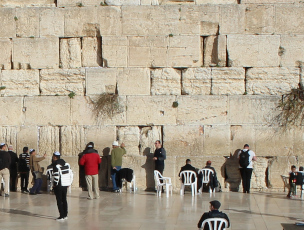

Topics
-

Hot Spot 01
嘆きの壁は、かつてはユダヤ教の神殿が建っていた所である。1948年からは、ヨルダンの管理下になり、ユダヤ人はこの壁に近づくことすらできなかった。1967年第３次中東戦争後は、自由に祈ることができるようになった。
-
Hot Spot 02
Church of the Holy Sepulchre
イエスが十字架にかけられ、磔刑に処せられたのはゴルゴダの丘である。聖書には、イエスがここに着いてからのさまざまなできごとが詳しく記されている。ゴルゴダの丘と考えられている所に建つのが、聖墳墓協会である。
-
Hot Spot 03
Dome of the Rock
エルサレムのシンボルともなっている岩のドームは、預言者ムハンマドが天使を従え、天馬に乗って昇天したといわれている聖岩を抱え込むよう建っている。ムスリム以外の入場は禁止されている聖なる場所である。